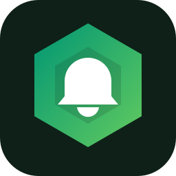

Notificaciones en tiempo real
Enterate al instante cuando suben archivos en Contenidos, habilitan entregas o correcciones en Portafolio, llegan mensajes en Mensajería, responden docentes en Foros o se publican Evaluaciones.
LibreMIeL es una alternativa gratuita, libre y de código abierto creada por y para estudiantes. Recibí notificaciones en tiempo real, consultá y enviá entregas, respaldá foros completos para estudiar sin conexión y olvidate de volver a iniciar sesión cada vez.
Disponible para Windows, Linux, Android y macOS (x64 y ARM64).

Diseñado respetando la estética original de MIeL en modo claro y oscuro, y cuidando que la sincronización en segundo plano jamás marque tus mensajes o archivos como leídos sin tu permiso.
Enterate al instante cuando suben archivos en Contenidos, habilitan entregas o correcciones en Portafolio, llegan mensajes en Mensajería, responden docentes en Foros o se publican Evaluaciones.
En la web de MIeL, abrir ciertas secciones borra automáticamente tus carteles de novedad. El motor de LibreMIeL detecta cambios en dos ciclos seguros sin alterar tus badges rojos en el servidor oficial.
Leé y respondé mensajes en una bandeja unificada multi-materia, descargá apuntes, subí entregas de Portafolio y participá en Foros con @menciones, imágenes con zoom y archivos adjuntos validados.
Descargá y respaldá foros completos (exportados en Markdown, JSON estructurado y HTML offline navegable) y todos los contenidos organizados por carpeta con modo incremental para estudiar sin internet.
Inicio de sesión automático y reconexión silenciosa continua. Tus credenciales se resguardan en el llavero seguro de tu sistema operativo y la sesión solo se cierra cuando vos lo decidís.
Buscador global offline (SQLite FTS5) para encontrar archivos, mensajes y respuestas de docentes al instante sin conexión, e integración con IA local/BYOK para resumir apuntes y armar guías de estudio.
Seleccioná tu sistema operativo y arquitectura. Todos los paquetes se compilan automáticamente mediante GitHub Actions y cuentan con verificación criptográfica SHA-256.
Disponible como instalador asistente con inicio automático opcional o paquete portable sin instalación.
Configura accesos directos, ícono en la bandeja del sistema (System Tray) y opción de inicio automático con Windows.
Descomprimí la carpeta en cualquier ubicación o pendrive y ejecutá libremiel.exe sin permisos de administrador.
Paquetes nativos para escritorio con soporte de bandeja del sistema (AppIndicator) y almacenamiento seguro (libsecret).
Funciona en cualquier distribución moderna sin instalar dependencias: dale permiso de ejecución (chmod +x) y abrilo.
Instalable con sudo apt install ./LibreMIeL-*.deb. Configura el lanzador de escritorio y dependencias automáticamente.
Instalable con sudo dnf install ./LibreMIeL-*.rpm en Fedora y distribuciones basadas en Red Hat.
Instalable directamente con sudo pacman -U LibreMIeL-*.pkg.tar.zst en Arch Linux, EndeavourOS o Manjaro.
Archivo comprimido con el binario y librerías listas para extraer y ejecutar desde cualquier carpeta de usuario.
Incluye sincronización periódica en segundo plano (WorkManager) y notificaciones nativas de Android.
arm64-v8a)Ideal para la gran mayoría de los celulares y tablets Android actuales (64 bits). Menor tamaño de descarga e instalación.
Si no estás seguro de la arquitectura de tu teléfono, este instalador incluye todas las arquitecturas en un solo archivo.
Binario Universal nativo que corre a máxima velocidad tanto en procesadores Apple Silicon (arm64) como Intel (x86_64).
Abrí la imagen .dmg y arrastrá LibreMIeL.app a tu carpeta de Aplicaciones.
Paquete LibreMIeL.app comprimido listo para extraer y ejecutar directamente en macOS.
Un único código fuente en Flutter compilado de forma nativa para escritorio y dispositivos móviles.
| Sistema Operativo | Arquitecturas | Formatos disponibles | Almacenamiento seguro |
|---|---|---|---|
| Windows (10 / 11) | x86_64 (64 bits) y ARM64 |
Instalador (.exe) y portable (.zip) |
Windows Credential Manager |
| Linux (Debian/Ubuntu, Fedora, Arch) | x86_64 (amd64) y ARM64 (aarch64) |
AppImage, .deb, .rpm, .pkg.tar.zst y portable (.tar.gz) |
libsecret (GNOME Keyring / KWallet) |
| Android | Universal, ARM64 (arm64-v8a), ARMv7 (armeabi-v7a) y x86_64 |
Instalador .apk |
Android Keystore / EncryptedSharedPreferences |
| macOS | Universal (Intel x86_64 + Apple Silicon ARM64) |
Instalador (.dmg) y portable (.zip) |
macOS Keychain |